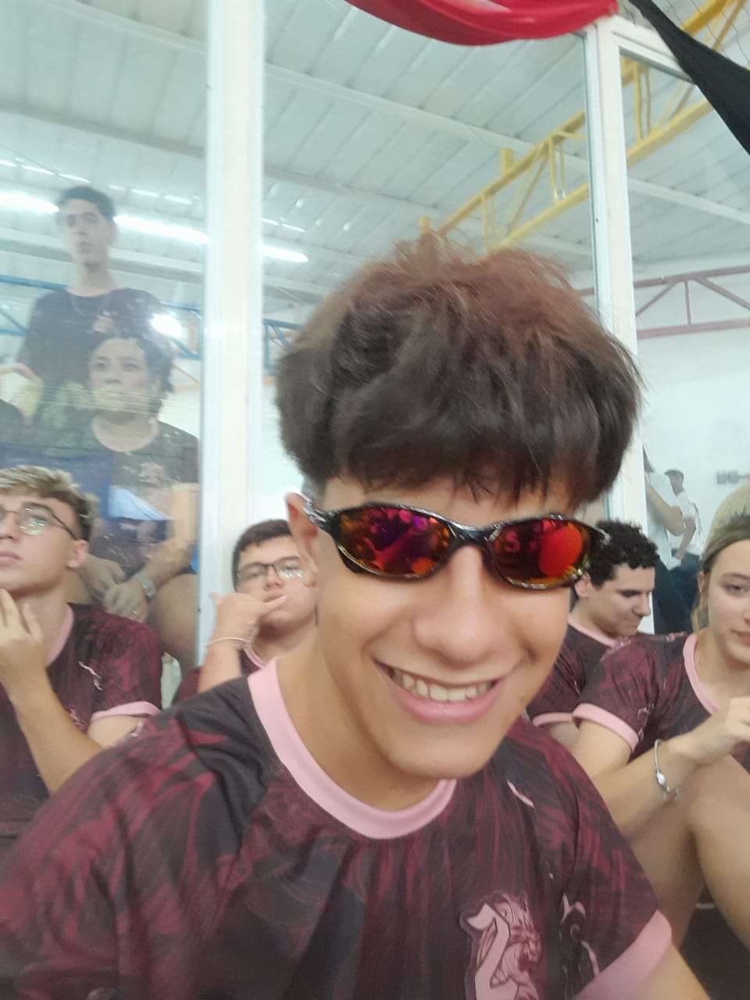

 |
Fernando de Carvalho Cardoso |
| Meu nome é Fernando, nasci em Guarulhos no dia 11/02/2009. No meu tempo livre, eu gosto de jogar videogames e fazer calistenia, e também gosto de aprender sobre programação e investimentos. Sou estudante do ensino médio no colégio ENIAC, nesse colégio, faço um curso de TI para aprender o máximo possível sobre programação para trabalhar na área futuramente. |